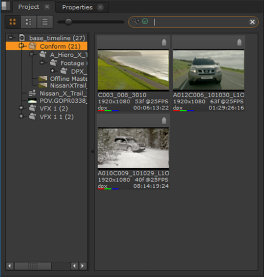
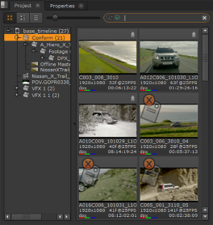

您可以搜索包含某些标签的剪辑，例如，如果您想找到标记为的所有剪辑 批准 .
有两种类型的标签搜索可以执行: 过滤器 和 旗帜 。通过单击中的放大镜图标选择所需的搜索类型 项目 标签。
• 过滤器 -显示包含指定标记的所有对象。这是默认的搜索方法。
• 旗帜 -显示所有对象并标记与搜索标记不匹配的项目。
从中拖动所需的标记 标签 面板进入搜索框，选择要过滤或标记的垃圾箱或垃圾箱。
提示:
如果您有多个搜索条件，请单击搜索框中的图标以显示图标的简要说明。
过滤器和标志将一直保留，直到您更改搜索条件或单击
x
搜索框中的图标。
以下示例显示 过滤 用于仅显示带有 笔记 标签应用和 标记 所有没有的剪辑 笔记 应用标记。
|
 |
 |
| 过滤. | 。..正在标记。 |
|
|